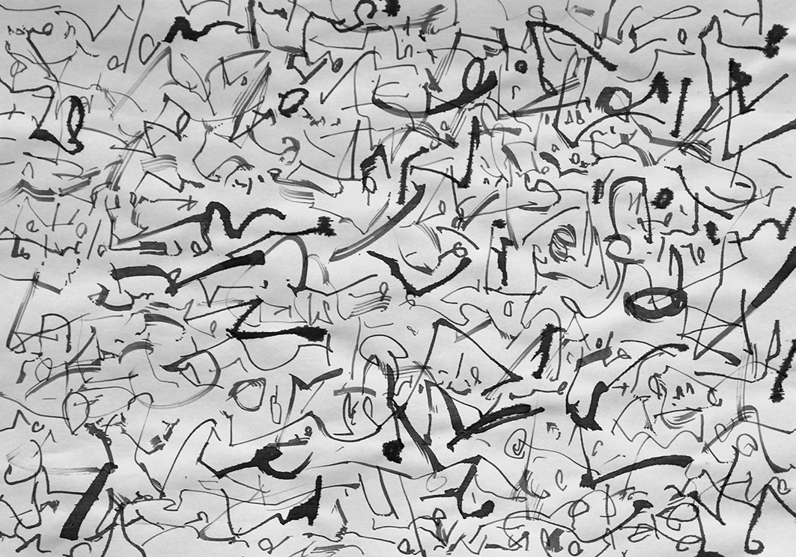
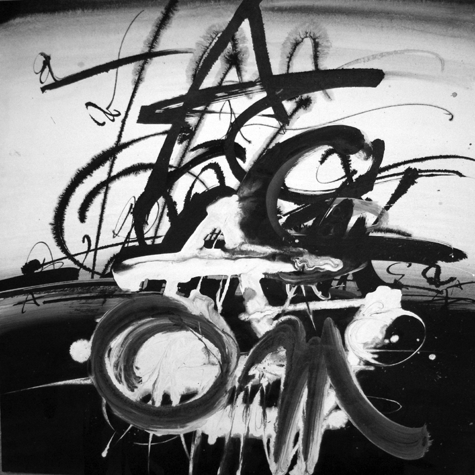

Брутализм
- Нам надоели небесные сласти —
- Хлебище дайте жрать ржаной.
- Нам надоели бумажные страсти —
- Дайте жить с живой женой!
- Владимир Маяковский
- Хлебище дайте жрать ржаной.
Брутализм Юрия — это протест против устаревшей сентиментальности и ложного прекраснодушия стилей, доставшихся в наследство от XVIII века. Художник разбивает старые скрижали — их обломки видим мы на его этюдах, названных «каллиграфией», хотя от этого жанра искусства здесь не осталось и следа. Юрий Тореев взял на себя тяжелый труд (хотя он и называет его игрой). Чтобы разбить старые скрижали, нужно иметь мощные руки, как у пророка Моисея. Но нужно ещё уметь создать новые скрижали — а это ещё труднее. Потому что «Разбивающий скрижали — он же и созидающий» (Ф. Ницше)
13.
Происходит катастрофа: обломки прекрасных литер гибнут во всемирном хаосе, залитые мраком беззакония, в судорогах аритмии, без надежды на спасение. Этот эскиз можно было бы поместить на знамени анархистов, бросающихся в бой против всякого порядка и закона. Не менее красноречивы в духе брутализма работы 14 — 17.
14.
15.

16.
17.
Постмодернизм
- Горе живущим на земле и на море,
- Потому что к вам сошёл Диавол в сильной ярости,
- Зная, что не много ему остаётся времени! (Откр.12:12)
- Потому что к вам сошёл Диавол в сильной ярости,
Художник нашего времени не может обойти своим вниманием проблему «конца искусства» и, более широко — «конца света». Все постмодернисты так или иначе осознают своё отношение к этой проблеме и выражают его в своих произведениях. Художник берёт на себя роль пророка: он демонстрирует не только конец живописи, но и «конец света». Другие жанры искусства также щедры на мрачные прогнозы.
Здесь не место обсуждать, насколько они справедливы. Думаю, что метафизическое предощущение конца свойственно менталитету человека — ведь в жизни каждого индивидуума постоянно что-то заканчивается: детство, молодость, здоровье и т.д. История человечества также состоит из цепи событий, имеющих начало и конец. Поэтому апокалиптические мотивы прослеживаются в мифологии, философии и поэзии всех народов, начиная от древности.
Свободная муза Тореева создала большое количество произведений, в которых выражена идея разрушения и гибели. Одно из таких произведений — графический лист Апокалипсис.
18.
Здесь уже Первый ангел вострубил, земля содрогнулась, порядок вещей нарушен, обломки их смешались и образовали первичный хаос. Уцелели только некоторые буквы, но и им суждена скорая гибель.
19.

20.
21.
22.
Эти работы являют собой зрелище мира после гибели всего сущего. Земля усеяна обломками самых различных форм. Она уже успокоилась, застыла в виде равномерной структуры, подобной конгломерату различных предметов.
Это структура хаоса, из которого снова может возникнуть нечто организованное и разумное, подобно космосу, возникшему из космической пыли.

23.
А вот и подтверждение нашей надежды: на рис.23 видим, как возникают небо и земля (или море?), а в них зарождаются и быстро растут некие энергичные упругие существа — и всё начинается сначала.
- Сумма страданий даёт абсурд.
- Пусть же абсурд обладает телом!
- И маячит его сосуд
- Чем-то черным на чём-то белом. (И. Бродский)
- Пусть же абсурд обладает телом!
Сюрреализм
- Сюрреализм — далеко идущее движение нашей эпохи.
- Он интернационален. (Иван Голль)
А иногда свободная кисть Юрия Тореева отдаёт дань всё ещё популярному в наше время течению модернизма — сюрреализму. Во многих графических работах Мастера я вижу признаки сюрреализма: не до конца утраченную связь с миром реальных вещей, налет иррационализма, деконструкцию, и вместе с тем то качество, которое мы называем «прекрасное» (прошу не отождествлять с понятием «красивое»" — это не одно и то же).
Взгляните на этюд.
24.
Разве не видите вы, что это бренные остатки какой-то старой кофты; она рассыпалась от долгой службы на отдельные волокна, но ещё хранит следы прикосновений человеческой руки и тепло человеческого тела, которое она добросовестно хранила во времена своей долгой службы. Картина прекрасна той красотой, что свойственна смерти, дающей начало новой жизни: так старый пень зарастает зеленым ковром моха и опёнками. Художник не пройдёт мимо него, не залюбовавшись.
Почти реалистическая картина собрания старых очков. Некогда они служили бабушке от школьных лет до студенческих, затем до зрелости и старости. Они сменяли друг друга, накапливая диоптрии, усовершенствуя форму и материал оправы — и наконец нашли покой в старинной шкатулке, где их иногда пересматривают внуки и правнуки. — Конечно, всё это мои фантазии. Скорей всего, Художник свободно импровизировал с овалами и прямыми линиями. Сюрреалиста нельзя понять до конца.
25.
Если руке Мастера каллиграфии хочется поработать, а писать ему не о чем — он пишет буквы алфавита. Небрежно написанные буквы чередуются с плоскостями (и обломками плоскостей), напоминающими живопись стиля минимализма. Картина загадочна и красива по колориту. В ней есть некая сверх-логичность сновидения.
26.
Фантастический сюжет из серии новых мифов о космосе. Что-то нездешнее, прилетевшее из звёздного мира, прекрасное и страшное, сулящее неизведанную опасность. Этот космический аппарат приземлился в пустынном месте, где нет следов людей. А может быть, это он превратил Землю в необитаемую пустыню?
27.
Признáюсь — термин сюрреализм применительно к работам в жанре каллиграфии — условность. Буквы и слова нельзя считать реальностью в такой же мере, как произведения природы или вещи, созданные рукой человека. Письмена изначально нереальны, поэтому не могут быть сверх-реальными. Но если шрифты не несут никакой информации — они могут восприниматься как живопись или графика, воздействующая на зрителя по тем же законам, что и живопись.
Работа Юрия Тореева — один из самых ярких примеров черно-белой живописи — это, по существу, пейзаж, где на фоне белой земли (или воды) и предгрозового неба возникла некая стена (или завеса), тяжелая и плотная внизу и ажурная вверху. Она вызывает чувства тревоги, опасности, и в то же время хрупкости и эфемерности непонятного объекта, и это чувство автоматически распространяется на ваше восприятие внешнего мира. Рис. 28 воспринимается как «выражение мысли без какого бы то ни было контроля со стороны разума, вне каких-либо эстетических и нравственных соображений» — а это и есть формула сюрреализма по Андре Бретону (автору «Манифеста сюрреализма»).
28.
Л. Миронова,
03.04.2014